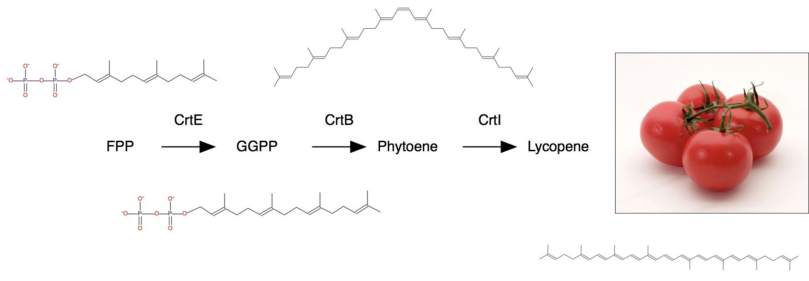

HTGAA : Bio Production
Offered in 2019 , Updated 05/30/2023 Patrick Boyle (Ginkgo Bioworks) (MIT)
Assignment
Read and annotate the sequence files for a DNA molecule. Isolate that DNA from cells, run an enzymatic reaction on it, and show the change you made. See Example Lab and Pro Challenge below.
Example Lab
Lycopene is the red pigment that gives tomatoes their color. This pigment is also made by microbes. In fact, transferring a 3-enzyme pathway to E. coli can convert farnesyl diphosphate (FPP) to lycopene. The computational tools and databases presented today can also be used to enhance lycopene production in E. coli or even produce different colors, such as the beta-carotene pigment that makes carrots orange.
For the laboratory portion of this assignment, you will characterize lycopene production in the TOP10 E. coli strain from Addgene with either the pAC-LYC or pAC-LYCipi plasmid. You will also characterize beta-carotene production in E. coli from Addgene with the pAC-BETAipi plasmid. Note, the pAC-LYC plasmid contains three genes from Erwinia herbicola: CrtE, CrtI, and CrtB. The Arabidopsis thaliana idi gene is added to the pAC-LYCipi plasmid to boost lycopene production. The pAC-BETAipi plasmid produces beta-carotene through the addition of the Erwinia herbicola crtY gene. All plasmids include the gene for chloramphenicol resistance.
Test the impact of genes and culture conditions (i.e. temperature and growth media composition) on the production of lycopene in E coli.
Example Lab
Lycopene is the red pigment that gives tomatoes their color. This pigment is also made by microbes. In fact, transferring a 3-enzyme pathway to E. coli can convert farnesyl diphosphate (FPP) to lycopene. The computational tools and databases presented today can also be used to enhance lycopene production in E. coli or even produce different colors, such as the beta-carotene pigment that makes carrots orange.
For the laboratory portion of this assignment, you will characterize lycopene production in the TOP10 E. coli strain from Addgene with either the pAC-LYC or pAC-LYCipi plasmid. You will also characterize beta-carotene production in E. coli from Addgene with the pAC-BETAipi plasmid. Note, the pAC-LYC plasmid contains three genes from Erwinia herbicola: CrtE, CrtI, and CrtB. The Arabidopsis thaliana idi gene is added to the pAC-LYCipi plasmid to boost lycopene production. The pAC-BETAipi plasmid produces beta-carotene through the addition of the Erwinia herbicola crtY gene. All plasmids include the gene for chloramphenicol resistance.
Remember to always initial and label your tubes so you can identify their contents and distinguish them from your classmates' material.
-
Setup 5.1 ml overnight cultures with conditions defined in the table below.
For each condition, combine 5 ml of the specified media (already supplemented with chloramphenicol) and 100 ul of E coli from the starter culture with the specified plasmid content. Prepare duplicates for each condition for 24 new subcultures samples in total.
Plasmid Content Growth Media Growth Temperature pAC-LYCipi LB 30C pAC-LYCipi LB+Fructose(6g/L) 30C pAC-LYCipi 2YT 30C pAC-LYCipi 2YT+Fructose(6g/L) 30C pAC-LYCipi LB 37C pAC-LYCipi LB+Fructose(6g/L) 37C pAC-LYCipi 2YT 37C pAC-LYCipi 2YT+Fructose(6g/L) 37C pAC-LYC LB 37C pAC-LYC LB+Fructose(6g/L) 37C pAC-BETAipi LB 37C pAC-BETAipi LB+Fructose(6g/L) 37C - Grow cultures for 20-24 hours in the circular roller drum (set to 7) within the appropriate warm room for each condition.
- Transfer 200 ul of each grown culture into an empty well on a clear-bottom 96-well plate. Transfer another 200 ul from each grown culture into a different empty well on the same plate. These should fully occupy rows A-D on the plate and will be used for estimating cell growth by optical density at the wavelength 600 nm (OD600). At 600 nm, dense cell suspensions will scatter light and the background absorbance of the media is minimal. See OD600 to cell count conversion.
-
For each sample, concentrate a pellet. Make sure the bacteria within the sample are at homogenous density; Fasten the culture tube's cap tight and vortex sample as necessary.
- Using two 700 ul transfers, transfer 1400 ul of each grown culture into a new 1.5 ml Eppendorf microcentrifuge tube.
- Centrifuge at 13-14,000 rpm for 1 minute.
- Discard supernatent. Use the pipette to remove remaining supernatent.
- Repeat the {transfer, spin, and discard} twice more per sample to add onto its pellet.
- Use the pipette to remove remaining supernatent
- Photograph pellets.
- Review acetone safety data sheet. Note, acetone is compatible with polypropylene, which is the plastic makeup of the 50 ml conical tubes and 1.5 ml Eppendorf microcentrifuge tubes.
- Apply 300 uL acetone to each sample's pellet and pipette up and down until the pellet is resuspended. The acetone will precipitate cellular proteins and the carotenoid pigment will go into solution. See organic solvent precipitation slides.
-
Isolate acetone-dissolved pigment from solid cellular precipitate.
- Centrifuge the acetone resuspended pellets at 13-14,000 rpm for 1 minute.
- Save the pigmented liquid portion by transferring 250 ul of supernatent into a fresh 1.5 ml Eppendorf microcentrifuge tube. Carefully avoid disturbing the pelleted pricipitate.
- Dilute the transferred supernatent with 250 ul of water. This is to avoid acetone corrosion of the polystyrene plates in the remaining steps.
- Transfer 200 ul of diluted pigment extraction into an empty well on the same clear-bottom 96-well plate as before. Transfer another 200 ul of diluted pigment extraction into a different empty well on this same plate. These should fully occupy rows E-H on the plate and will be used for estimating lycopene and beta-carotene yield based on their respective peak absorption wavelengths of 474 nm and 456 nm. See lycopene spectrum.
-
Measure the absorption spectrum of all wells on the full 96-well plate using the BioTek plate reader. Note, absorbance is measured as 2 - log10 %transmittance. See the Beer-Lambert Law.
- Start the Gen5 plate reader software and open the the "HTGAA19_AbsSpectrum" experiment. This will measure absorbance in the 350-650 nm UV-Vis spectrum at 2 nm increments.
- Load plate onto the plate tray. Select Plate>Read and click all options to proceed with running the plate read.
- To save results after plate reading, select Plate>File Export.
- To compare relative pigment production per cell, normalize each sample's absorption peak measurement for the relevant pigment by the OD600 measurement from the corresponding bacterial culture.
- To preserve the pigment, feel welcome to transfer samples from your plate wells onto Whatman paper and let dry. Here is a demo with beta-carotene:
Discussion Questions
- Using tools such as Biocyc (https://www.biocyc.org) and KEGG (http://www.kegg.jp), review enzymes that can be added to (or knocked out of) your lycopene-producing E. coli to increase the amount of lycopene they produce. Compare the expected and experimental differences in production efficiency between bacteria that carry the pAC-LYC and pAC-LYCipi plasmids.
- Using Biocyc and/or KEGG, can you identify the enzyme to convert the carrot-orange pigment beta-carotene to the corn-yellow pigment zeaxanthin?
Useful Resources
- COBRA software for metabolic modeling - not required for assignment
-
Lycopene Production Papers for Assignment
- Analysis and expression of the carotenoid biosynthesis genes from Deinococcus wulumuqiensis R12 in engineered Escherichia coli
- Gene expression pattern analysis of a recombinant Escherichia coli strain possessing high growth and lycopene production capability when using fructose as carbon source
- Improvement of Biomass Yield and Recombinant Gene Expression in Escherichia coli by Using Fructose as the Primary Carbon Source
- Evidence of a role for LytB in the nonmevalonate pathway of isoprenoid biosynthesis
- Bitesize Bio Links
- Acetone Precipitation
- E chromi iGEM Cambridge 2009
Opentrons Script
To be added